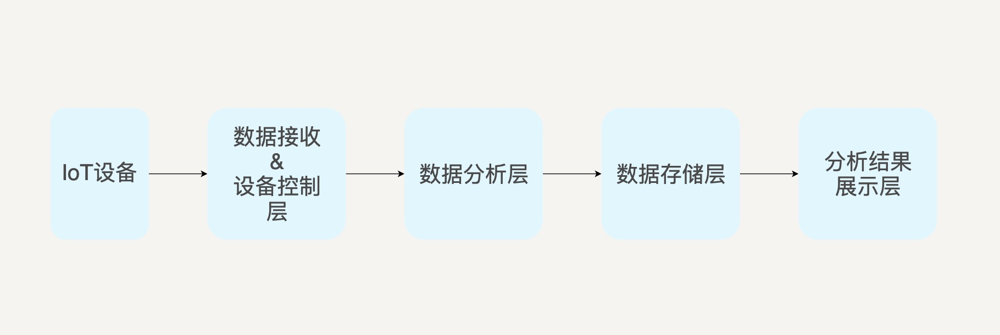
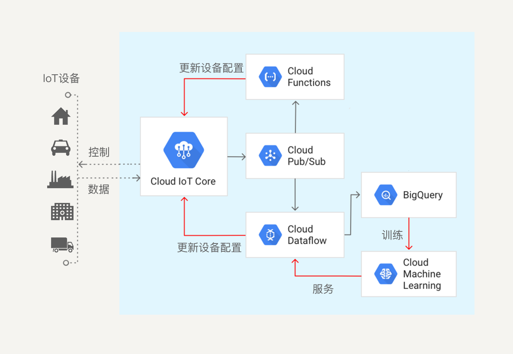
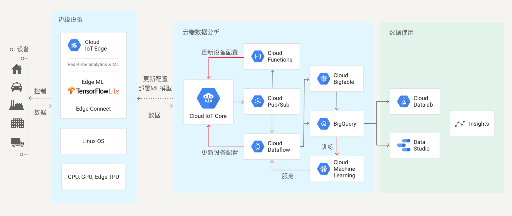

- 00 开篇词 从这里开始，带你走上硅谷一线系统架构师之路.md.html
- 01 为什么MapReduce会被硅谷一线公司淘汰？.md.html
- 02 MapReduce后谁主沉浮：怎样设计下一代数据处理技术？.md.html
- 03 大规模数据处理初体验：怎样实现大型电商热销榜？.md.html
- 04 分布式系统（上）：学会用服务等级协议SLA来评估你的系统.md.html
- 05 分布式系统（下）：架构师不得不知的三大指标.md.html
- 06 如何区分批处理还是流处理？.md.html
- 07 Workflow设计模式：让你在大规模数据世界中君临天下.md.html
- 08 发布_订阅模式：流处理架构中的瑞士军刀.md.html
- 09 CAP定理：三选二，架构师必须学会的取舍.md.html
- 10 Lambda架构：Twitter亿级实时数据分析架构背后的倚天剑.md.html
- 11 Kappa架构：利用Kafka锻造的屠龙刀.md.html
- 12 我们为什么需要Spark？.md.html
- 13 弹性分布式数据集：Spark大厦的地基（上）.md.html
- 14 弹性分布式数据集：Spark大厦的地基（下）.md.html
- 15 Spark SQL：Spark数据查询的利器.md.html
- 16 Spark Streaming：Spark的实时流计算API.md.html
- 17 Structured Streaming：如何用DataFrame API进行实时数据分析_.md.html
- 18 Word Count：从零开始运行你的第一个Spark应用.md.html
- 19 综合案例实战：处理加州房屋信息，构建线性回归模型.md.html
- 20 流处理案例实战：分析纽约市出租车载客信息.md.html
- 21 深入对比Spark与Flink：帮你系统设计两开花.md.html
- 22 Apache Beam的前世今生.md.html
- 23 站在Google的肩膀上学习Beam编程模型.md.html
- 24 PCollection：为什么Beam要如此抽象封装数据？.md.html
- 25 Transform：Beam数据转换操作的抽象方法.md.html
- 26 Pipeline：Beam如何抽象多步骤的数据流水线？.md.html
- 27 Pipeline I_O_ Beam数据中转的设计模式.md.html
- 28 如何设计创建好一个Beam Pipeline？.md.html
- 29 如何测试Beam Pipeline？.md.html
- 30 Apache Beam实战冲刺：Beam如何run everywhere_.md.html
- 31 WordCount Beam Pipeline实战.md.html
- 32 Beam Window：打通流处理的任督二脉.md.html
- 33 横看成岭侧成峰：再战Streaming WordCount.md.html
- 34 Amazon热销榜Beam Pipeline实战.md.html
- 35 Facebook游戏实时流处理Beam Pipeline实战（上）.md.html
- 36 Facebook游戏实时流处理Beam Pipeline实战（下）.md.html
- 37 5G时代，如何处理超大规模物联网数据.md.html
- 38 大规模数据处理在深度学习中如何应用？.md.html
- 39 从SQL到Streaming SQL：突破静态数据查询的次元.md.html
- 40 大规模数据处理未来之路.md.html
- FAQ第一期 学习大规模数据处理需要什么基础？.md.html
- FAQ第三期 Apache Beam基础答疑.md.html
- FAQ第二期 Spark案例实战答疑.md.html
- 加油站 Practice makes perfect！.md.html
- 结束语 世间所有的相遇，都是久别重逢.md.html
- 捐赠
37 5G时代，如何处理超大规模物联网数据
你好，我是蔡元楠。
时间过的真快，转眼间我们已经结束了前五个模块的学习，来到了最后一个模块“大规模数据的挑战和未来”。
一门技术类课程的常见学习路线就是“过去→现在→未来”。这个专栏也是如此，我们首先研究了大数据处理技术的发展历程，从MapReduce出发，深入剖析了它的设计思路和优缺点。接下来结合具体的例子，一起学习了当下最流行的数据处理框架Spark和Apache Beam。
在这个过程中，你不难发现，任何一门技术的出现都是为了解决实际问题，改进之前的技术所存在的缺陷，而贯穿整个课程的两大场景就是批处理和流处理。
Spark在MapReduce的基础上不断改进，在批处理这方面有良好的性能，在流处理上也在不断提高。Apache Beam更是一个统一批处理和流处理的框架。
正如我在开篇词中写到的，我理想中的专栏是一份与你一同成长的计划。虽然我们已经对当下流行的技术有了深入的了解，但是作为一名架构师，你的目光一定要放长远，要时刻对未来5～10年，乃至20年的新问题和技术发展方向保持了解，不能固步自封，只满足于现状。毕竟，我们的征途是星辰大海。
在模块六中，我将列举三个大数据处理技术未来的方向，带你了解这些问题的挑战和难度，并学习现有的解决方案。希望通过这一模块的学习，你可以对大数据处理的未来有一些初步的认识，并强化自己学习新知识的能力。
什么是物联网？
物联网（Internet of Things）应该是一个你经常听说的名词，不过，你真的了解它吗？让我先来简要介绍一下什么是物联网吧。
你可以将物联网的功能看作“使用嵌入在物理环境中的网络连接设备，来改进现有流程，或启用以前无法实现的新场景”。这些设备或事物连接到网络后，可以提供它们使用传感器从环境中收集的信息，或允许其他系统通过执行器连接，并作用于现实世界。
它们可以是我们个人拥有并随身携带的设备（比如手表、眼镜），或留在家中的设备（比如电视、空调、音响等智能硬件），也可能是联网的工厂设备或机器，还可能是城市中的公共设施（比如停车场、公交车）。
想象一下，未来我们身边的所有物体，都有可能连入互联网，我们的生活将变得无比便捷。每个设备都能将来自现实世界的有价值信息转换为数字数据，从而有效改善人类与各类产品的交互方式。
物联网可以被广泛应用在生活的各方各面，比如智能家居、智能交通、智能工厂、智能医院、智能物流等。
- 智能家居：这可能是你对物联网应用了解最多的方面。家里的各种电器，乃至防盗门窗，都可以连入物联网，我们可以通过手机或者电脑远程操控所有电器。如果有异常情况，比如着火或者小偷进入，都可以及时发现并采取措施。
- 智能交通：在公路和铁路的关键点设置传感器，可以监控交通基础设施的运作状况，以及监控特殊事件，比如交通流量的变化和道路拥堵的发生。这些物联网传感器发回到总部的信息，可以用来向每辆汽车通知拥堵点，并提供备用路线。在停车场设置传感器和摄像头，也可以向每个人提供车位信息。
- 智能工厂：工厂的所有机器设备都可以连入网络，我们可以通过各类传感器来获得实时的机器设备数据与性能，并把它传入控制中心。通过对这些数据进行实时处理，我们可以自动预测设备何时需要维护、实时优化设备性能、预测停机时间、检测异常、跟踪设备状况和位置。工厂的自动化程度将大大提高。
- 智能医院：病人可以在身上佩戴检测身体基本指标的手环，每时每刻把身体信息发回数据处理中心，医院就可以实时了解病人的身体情况。一旦有异常情况发生，还可以自动呼叫救护车。
- 智能物流：卡车配备传感器之后，可以追踪一路上的运送情况，选择最佳运送路线，追踪时间等。在有些情况下，传感器还用于追踪驾驶员的速度、刹车习惯等，数据处理终端可以选择最安全、最环保的驾驶路线。
物联网的世界充分体现了大规模数据的四个特点——多样性、大规模、高速率和真实性。
1.多样性
说数据是具备多样性的，你很容易理解。这是因为物联网涉及的应用范围很广，就如我刚才提到的智能家居、智能交通、智能工厂、智能医院等。
从广义上讲，生活中的各方各面都可以应用物联网。而且，在不同的领域和行业，需要面对的应用数据的类型、格式也不尽相同，这些都是物联网多样性的体现。
2.大规模
之所以说物联网数据规模庞大，是因为它的节点是海量的，它不像互联网，局限于手机或者电脑。
想象一下，你的眼镜、手表、音响、空调、冰箱、电视……这些全部都成为了物联网的节点。而且，这些设备是24小时不间断地提供数据的，数据的生成频率远高于互联网。所以，物联网的实时数据规模是非常大的。
3.高速率
物联网中的数据速率比常见的大数据处理场景要更高。由于前面数据“大规模”的特点，物联网要求数据处理中心能处理更多的数据。同时，为了满足物联网的实时响应，数据的传输速率也要更高才行。
举个例子，如果速率不够高、不够实时，那么汽车的自动驾驶就会危险重重。因为它与真实物理世界直接相关，需要能实时访问、控制相应的节点和设备才能完成安全的驾驶。只有高数据传输速率才能支持它的实时性。
这也是为什么物联网是最近十年才发展起来的原因，十几年前的通信和网速很难达到这样的要求。
4.真实性
我们都知道，物联网的数据来源于真实世界，而且要根据数据分析处理后的结果，对真实世界中的设备发送指令采取相应的操作，最终会作用于真实世界。所以，物联网对数据真实性要求很高。
由此可见，在物联网的世界中，构建一个可靠的、处理速度快的大规模数据处理方案尤其重要。
处理物联网数据的架构
一个基本的物联网数据处理pipeline就如下图所示：

你可以看到，在这个pipeline中，各个设备终端不断地向数据接收层发送数据。在这一层，数据被清洗，并且转换为统一的格式，然后发送到数据分析层进行分析。在分析过后，处理过的数据可以被存储下来。基于存储的数据，我们可以创建各种dashboard来展示，这也方便管理人员直观地观察数据。
如果分析之后发现需要某些设备采取特定的操作，这些信息可以从数据分析层传送回设备控制层，从而向终端设备发送相应的指令。
各大云服务厂商都提供物联网数据处理的解决方案。
对于数据接收层，市场上有Google IoT Core、IoT Hub、Azure Event Hub等产品，它们可以接收各类设备发送的数据，并对它们进行管理。数据分析层就是我们进行数据处理的地方，可以用Spark、Hadoop、Azure DataBricks或者Google Cloud Dataflow等平台进行分析。数据存储层则是各类分布式存储系统如Google Cloud BigQuery、HBase、Amazon S3等。如果要基于数据创建dashboard，可以用Google Cloud Datalab等交互式分析工具。
以Google Cloud Platform为例，它提供的物联网数据处理基本架构如下图所示：

终端数据经过Cloud IoT Core的清洗并转换成统一的格式之后，被发送到Cloud Pub/Sub这个消息队列中，我们可以配置不同的数据分析工具来订阅Pub/Sub中的消息。
Cloud Functions是一个事件驱动的无服务器计算平台，利用它可以对数据进行实时处理，并无需配置服务器。Cloud DataFlow是Google Cloud提供的基于Apache Beam的批流数据统一处理平台，它可以将数据存入Big Query，还可以配置Google Cloud Machine Learning来对物联网数据进行训练，得到相应的数据模型。数据分析的结果可以传回Cloud IoT Core，通过它来对终端设备发送指令。
在实际应用中，物联网的数据处理场景分不同的类型。
有的场景数据量小、处理简单，但是对实时性要求高；有的场景数据量大，处理比较复杂，而且需要综合历史数据。
基于这两种分类，有人提出了“Device-Edge-Cloud”（设备-边缘-云）的架构，即把简单的、需要实时计算和分析的过程放到离终端设备更近的地方，如设备本身、网关或者服务器，以保证数据数据处理的实时性，同时也减少数据传输的风险，即我们常听说的边缘计算；把复杂的、需要存储的数据处理放在Cloud上。这样可以大大加快简单操作的分析和响应速度。
在上面的架构中，除了物联网设备以外的部分，都部署在Google Cloud上。结合边缘设备处理的特性之后，Google Cloud的物联网数据处理架构就如下图所示：

小结
物联网是当今大规模数据处理的一大热点。今天我们初步了解了物联网的应用场景，产生数据的特性，以及基本的物联网数据处理架构，并以Google Cloud Platform为例，带你一起了解了一个成熟的物联网云服务平台都有怎样的特性。你可以去看看其他的云服务厂商所提供的物联网数据处理平台，比如微软的Azure IoT Hub，比较一下它们的异同。
思考题
都说在5G时代，边缘计算是一个非常重要的技术。你能去了解一下边缘计算，然后告诉我为什么可以这么说吗？
欢迎你把自己的学习体会写在留言区，与我和其他同学一起讨论。如果你觉得有所收获，也欢迎把文章分享给你的朋友。
© 2019 - 2023 Liangliang Lee. Powered by gin and hexo-theme-book.